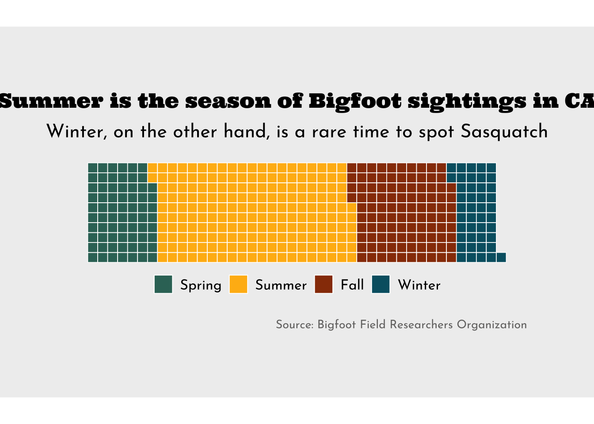

##~~~~~~~~~~~~~~~~~~~~~~~~~~~~~~~~~~~~~~~~~~~~~~~~~~~~~~~~~~~~~~~~~~~~~~~~~~~~~~
## setup ----
##~~~~~~~~~~~~~~~~~~~~~~~~~~~~~~~~~~~~~~~~~~~~~~~~~~~~~~~~~~~~~~~~~~~~~~~~~~~~~~
#..........................load packages.........................
library(tidyverse)
library(waffle)
library(showtext)
#..........................import data...........................
bigfoot <- readr::read_csv('https://raw.githubusercontent.com/rfordatascience/tidytuesday/master/data/2022/2022-09-13/bigfoot.csv')
#..........................import fonts..........................
font_add_google(name = "Ultra", family = "ultra")
font_add_google(name = "Josefin Sans", family = "josefin")
#................enable {showtext} for rendering.................
showtext_auto()
##~~~~~~~~~~~~~~~~~~~~~~~~~~~~~~~~~~~~~~~~~~~~~~~~~~~~~~~~~~~~~~~~~~~~~~~~~~~~~~
## wrangle data ----
##~~~~~~~~~~~~~~~~~~~~~~~~~~~~~~~~~~~~~~~~~~~~~~~~~~~~~~~~~~~~~~~~~~~~~~~~~~~~~~
ca_season_counts <- bigfoot |>
filter(state == "California") |>
group_by(season) |>
count(season) |>
ungroup() |>
filter(season != "Unknown") |>
mutate(season = fct_relevel(season, "Spring", "Summer", "Fall", "Winter")) |> # set factor levels for legend
arrange(season, c("Spring", "Summer", "Fall", "Winter")) # order df rows; {waffle} fills color based on the order that values appear in df
##~~~~~~~~~~~~~~~~~~~~~~~~~~~~~~~~~~~~~~~~~~~~~~~~~~~~~~~~~~~~~~~~~~~~~~~~~~~~~~
## waffle chart ----
##~~~~~~~~~~~~~~~~~~~~~~~~~~~~~~~~~~~~~~~~~~~~~~~~~~~~~~~~~~~~~~~~~~~~~~~~~~~~~~
#........................create palettes.........................
season_palette <- c("Spring" = "#357266",
"Summer" = "#FFB813",
"Fall" = "#983A06",
"Winter" = "#005F71")
plot_palette <- c(gray = "#757473",
beige = "#EFEFEF")
#.......................create plot labels.......................
title <- "Summer is the season of Bigfoot sightings in CA"
subtitle <- "Winter, on the other hand, is a rare time to spot Sasquatch"
caption <- "Source: Bigfoot Field Researchers Organization"
#......................create waffle chart.......................
ggplot(ca_season_counts, aes(fill = season, values = n)) +
geom_waffle(color = "white", size = 0.3, n_rows = 10) +
coord_fixed() +
scale_fill_manual(values = season_palette) +
labs(title = title,
subtitle = subtitle,
caption = caption) +
theme_void() +
theme(
plot.title = element_text(family = "ultra",
size = 17,
hjust = 0.5,
margin = margin(t = 0, r = 0, b = 0.3, l = 0, "cm")),
plot.subtitle = element_text(family = "josefin",
size = 16,
hjust = 0.5,
margin = margin(t = 0, r = 0, b = 0.5, l = 0, "cm")),
plot.caption = element_text(family = "josefin",
size = 10,
color = plot_palette["gray"],
margin = margin(t = 0.75, r = 0, b = 0, l = 0, "cm")),
legend.position = "bottom",
legend.title = element_blank(),
legend.text = element_text(family = "josefin",
size = 12),
plot.background = element_rect(fill = plot_palette["beige"],
color = plot_palette["beige"]),
plot.margin = margin(t = 2, r = 2, b = 2, l = 2, "cm")
)